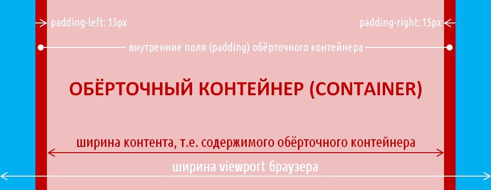
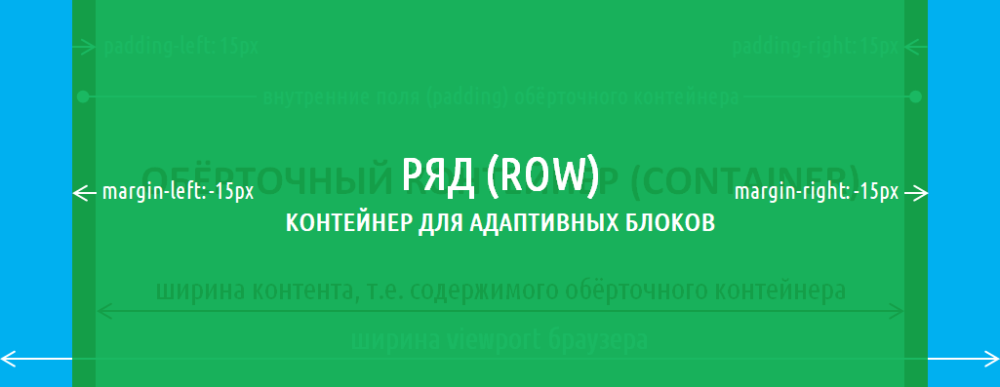
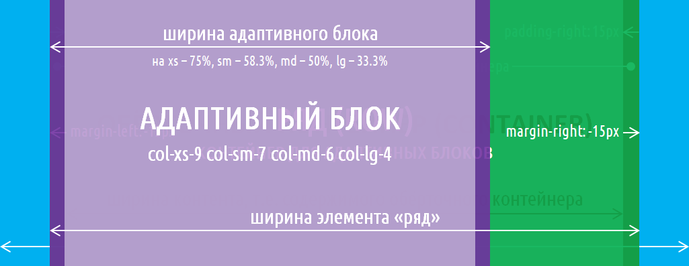
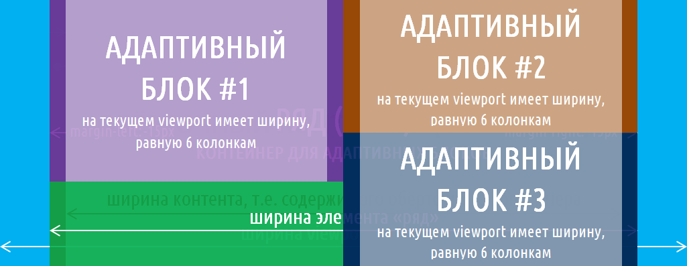
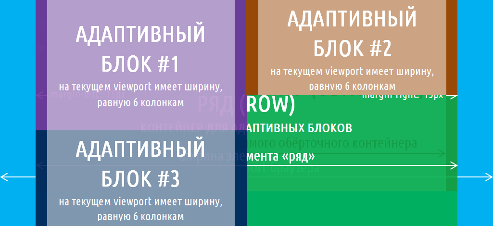
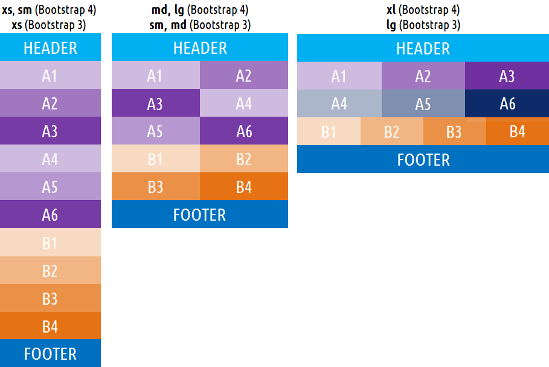

В этой статье познакомимся с основными элементами сетки Bootstrap, а также разберём несколько примеров, в которых рассмотрим, как применять эти элементы сетки для разработки макета сайта.
Элементы сетки фреймворков Bootstrap 3 и 4
Основными элементами сетки Bootstrap 3 и 4 являются:
Обёрточный контейнер - это первый элемент, с которого начинается создание макета страницы или некоторой его самостоятельной части. Его основное назначение - это установить ширину разрабатываемого макета. В Bootstrap 3 и 4 обёрточные контейнеры бывают 2 типов. Первый (container) предназначен для создания адаптивно-фиксированного макета, а второй (container-fluid) - для адаптивно-резинового (адаптивно-гибкого) макета.
Адаптивно-фиксированный макет характеризуется тем, что он имеет условно постоянную ширину, которая на одних диазонах viewport браузера имеет одно значение, а на дугих - другое.
Например, в Bootstrap 3 определено 4 диапазона (контрольные точки): xs (по умолчанию), sm (ширина viewport больше 768px), md (ширина viewport больше 992px), lg (ширина viewport больше 1200px).
Обёрточный контейнер (container) устанавливает макету:
Ширина же адаптивно-резинового макета не имеет фиксированного значения, она всегда равна ширине vieport браузера.
Обёрточный контейнер кроме установления ширины макету ещё выравнивает его по центру страницы и задаёт внутренние поля (padding) слева и справа по 15px.

Ряд - это тоже контейнер, но для адаптивных блоков сетки Bootstrap.
В Bootstrap 3 его основная роль - это создать отрицательные отступы (margin) слева и справа по 15px.
В Boostrap 4 он не только задаёт отрицательные отступы, но и выполняет ещё функцию flex-контейнера. Т.е. если данный элемент не установить, то адаптивные блоки вообще не будут иметь свойственного им поведения.
Принцип использования элемента "ряд" очень прост, он всегда должен выступать родителем для адаптивных блоков. Т.е. если какой-то элемент (обёрточный контейнер или адаптивный блок) необходимо разметить с помощью адаптивных блоков, то перед тем как их создать сначала установите ряд, а уже в нём эти блоки.

Адаптивный блок - это элемент, который имеют адаптивную ширину. Т.е. его ширина на одном диапазоне viewport может иметь одно значение, а на другом - другое.
Установка поведения адаптивного блока осуществляется с помощью одного или нескольких классов col.
Синтаксис класса col:
col-{breakpoint}-{number_columns}
{breakpoint} - это контрольная точка, которая определяет минимальную ширину viewport, начиная с которой этот класс будет действовать.
В Bootstrap 3 для использования доступно по умолчанию четыре контрольные точки (xs, sm, md и lg), а в Bootstrap 4 - пять контрольных точек (без обозначения, sm, md, lg и xl). Контрольные точки приведены в порядке возрастания ширины viewport, начиная с которой они начинают действовать.
{number_columns} - это ширина адаптивного блока, которую он будет иметь, начиная с этой контрольной точки. Указывается ширина адаптивного блока с помощью колонок Bootstrap (целого числа) по умолчанию от 1 до 12. Данное число определяет, какую часть ширины он будет иметь относительно содержащего его блока (элемента «ряд»). Минимальная ширина адаптивного блока - это 1/12 (8.3%), а максимальная - 12/12 (100%).

Например, адаптивный блок с классом col-xs-6 col-sm-4 col-md-3 col-lg-2 будет (Bootstrap 3):
Если же какую-то контрольную точку не указать, то действие этого класса распространится и на следующие контрольные точки. Это связано с тем, что в CSS Bootstrap медиа запросы построены с использованием минимальной ширины.
Например, адаптивный блок с классом col-xs-8 col-md-6 будет (Bootstrap 3):
По умолчанию адаптивные блоки имеют ширину, равную 12 колонок Bootstrap, т.е. 100%. Если у вас какой-то блок, начиная с xs должен иметь это значение, то его можно не указывать.
Например, адаптивный блок с классом col-md-6 col-lg-9 будет (Bootstrap 3):
Адаптивные блоки в Bootstrap располагаются линиями. В одну линию может поместиться адаптивные блоки с суммарным количеством колонок Bootstrap по умолчанию не больше 12. Блоки, которые не помещаются в первую линию, переносятся на следующую линию и т.д.
В Bootstrap 3 при создании макета имеется один очень важный момент, который связан с тем, что адаптивные блоки не всегда переносятся на следующую линию. Это поведение адаптивных блоков объясняется тем, что они в этой версии фреймворка являются плавающими (float:left).
Например, в этой разметке третий адаптивный блок располагается не на второй линии, а прилипает к первому адаптивному блоку:

<div class="row">
<div class="col-xs-6" style="height: 200px;">
#1
</div>
<div class="col-xs-6" style="height: 150px;">
#2
</div>
<div class="col-xs-6" style="height: 150px;">
#3
</div>
</div>
Чтобы это исправить необходимо перед адаптивным блоком, который должен начинаться с новой линии добавить пустой элемент div с классом clearfix.

<div class="row">
<div class="col-xs-6" style="height: 200px;">
#1
</div>
<div class="col-xs-6" style="height: 150px;">
#2
</div>
<div class="clearfix"></div>
<div class="col-xs-6" style="height: 150px;">
#3
</div>
</div>
Основные правила создания макета с помощью элементов сетки Bootstrap
Основные этапы создания макета веб-страницы:
В качестве примера создадим нижеприведённый макет на Bootstrap 3 и 4.

Верстка вышеприведённого макета на Bootstrap 3:
<header>
<div class="container-fluid">
HEADER
</div>
</header>
<section class="a">
<div class="container-fluid">
<div class="row">
<div class="col-sm-6 col-lg-4 a1">A1</div>
<div class="col-sm-6 col-lg-4 a2">A2</div>
<div class="clearfix visible-sm-block visible-md-block"></div>
<div class="col-sm-6 col-lg-4 a3">A3</div>
<div class="clearfix visible-lg-block"></div>
<div class="col-sm-6 col-lg-4 a4">A4</div>
<div class="clearfix visible-sm-block visible-md-block"></div>
<div class="col-sm-6 col-lg-4 a5">A5</div>
<div class="col-sm-6 col-lg-4 a6">A6</div>
</div>
</div>
</section>
<section class="b">
<div class="container-fluid">
<div class="row">
<div class="col-sm-6 col-lg-3 b1">B1</div>
<div class="col-sm-6 col-lg-3 b2">B2</div>
<div class="clearfix visible-sm-block visible-md-block"></div>
<div class="col-sm-6 col-lg-3 b3">B3</div>
<div class="col-sm-6 col-lg-3 b4">B4</div>
</div>
</div>
</section>
<footer>
<div class="container-fluid">
FOOTER
</div>
</footer>
Верстка вышепредставленного макета на Bootstrap 4:
<header>
<div class="container-fluid">
HEADER
</div>
</header>
<section class="a">
<div class="container-fluid">
<div class="row">
<div class="col-md-6 col-xl-4 a1">A1</div>
<div class="col-md-6 col-xl-4 a2">A2</div>
<div class="col-md-6 col-xl-4 a3">A3</div>
<div class="col-md-6 col-xl-4 a4">A4</div>
<div class="col-md-6 col-xl-4 a5">A5</div>
<div class="col-md-6 col-xl-4 a6">A6</div>
</div>
</div>
</section>
<section class="b">
<div class="container-fluid">
<div class="row">
<div class="col-md-6 col-xl-3 b1">B1</div>
<div class="col-md-6 col-xl-3 b2">B2</div>
<div class="col-md-6 col-xl-3 b3">B3</div>
<div class="col-md-6 col-xl-3 b4">B4</div>
</div>
</div>
</section>
<footer>
<div class="container-fluid">
FOOTER
</div>
</footer>